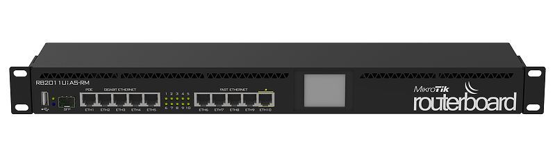

Post #1 - Routerboard
É o nome dado a uma série de produtos MikroTik que combina o RouterOS com uma linha de hardware próprio. As vezes o termo RouterBoard pode não ser tão popular para todos, mas de maneira bem simples podemos dizer que se trata de um equipamento responsável por gerenciar todo o fluxo que entra e sai da rede/internet.